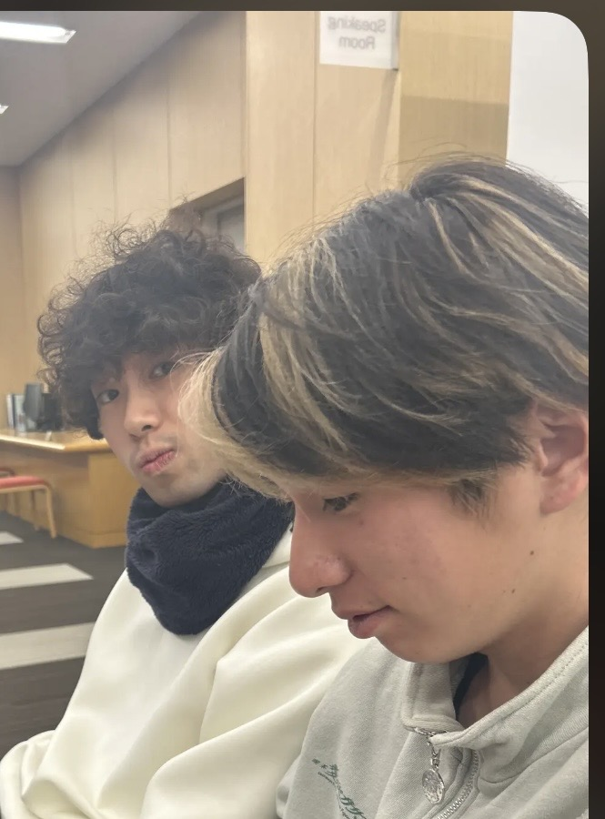

名大生のヒトリゴト
名大生が徒然なるままに書き上げた力作コラムまとめ。ジャンル、内容も多種多様。お気に入りのライターを見つけよう。
Vo.3 理学部の新入生向け。理学部1年はこんな感じ
このコラムを書いた人

こんにちは。今回理学部まとめを書かせていただきますブラちゃんです。読み方は何でもよろしいです。当人、一年生ながらにして結構履修とか何だとかに関して困難に直面しているので参考にしていただければ幸いに思いますー。
そも理学部ってなんぞや
ここを閲覧している諸君からしたら説明不要かもしれないが、理学部は、数理学科、物理学科、化学科、生命理学科、地球惑星学科の五つの学科から構成されている学部である。勉強内容としては、自然科学の基礎となる学問の研究と教育、自然現象の中に潜む真理を追求する、といった感じである。わかりやすく言えば、物理だとエントロピー増大の法則やマクスウェル方程式、化学だと核スピン保存則や芳香族求電子置換反応とかそんな感じのことを研究していく、みたいな学部です。
人生の分岐点「学科分属」
さて、名大理学部の特徴と言えば
京都大学
と同様に一年次は学部全体で一緒の講義を受け、二年次に上がるときに一年次の成績を考慮してそれぞれ希望の学科に分属されるというところである。ちなワイ京理船降り名理( ﾉД`)ｼｸｼｸ…っとまあそんなことはどうでもよくて学科分属に際する注意すべき点を説明しよう。
1.学科によって取るべき科目がある
2.GPAが重要になってくる学科もある
3.なんならGPA×単位数なので単位数も重要になってく
4.全員が希望の学科にいけるとは限らない
皆さん４が気になりますよね。実は学科には定員があってその人数を超えてしまうと多少超えているだけなら許容してくれるのですが(多分基本2~3人程度)大きく超えてしまうと数名が他学科に飛ばされてしまいます。そこで重要になってくるのが1~3の項目です。定員超過の場合はこれによって選考されます。なので他者を蹴り落とさんとす醜いB1どうしのバトルロワイアルが繰り広げられるわけです。この戦いに負けてしまってはやりたい研究もできず将来路頭に迷ってしまうことになります。ここで勝て、勝てねぇ雑魚はいらねぇよ。では、各学科の選考について書いていきましょう
数理学科
・微分積分学と線形代数を合わせた成績の高い順
ボーダーラインでは数学演習と数学展望の生成期を加味
物理学科
・前期の物理学基礎Ⅰ、後期の電磁気学Ⅰを合わせた成績の高い順
化学科
・GPA×単位数(化学実験は4単位換算)
生命理学科
・GPA×単位数
ちくわ ・
数理と物理は分かりやすいですね、頑張ればいい科目がはっきりしている。数学と物理を極めれば勝ちです。それに数理は多少人数多くても受け入れてくれます。物理はどっちかがFだとしんどいかもしれません。そもそもそんな雑魚野郎が物理行くなよ(笑)地獄見るぞ真顔(‘_’)
さて、化学科と生命理学科のGPA×単位数ですがこれが大きな勝負となります。まずGPAは君たちの成績です、カスはクッソ低いです。ツイ廃は上下差がエゲツナイデス、もろちん筆者ワイは低い(´；ω；`)ｳｩｩ基本的にGPAは履修科目数が多ければ高く少なければ低くなりやすいです。何故かはGPAの定義式を見ろ、お前たちなら分かるだろ。賢い人は履修科目数が多くてもGPAが高いので問題ないですが、まあ普通の人はそうはいかないわけで。なので履修登録の時どの科目を選ぶかがかなり重要になってきます。大体理学部であればGPA3.5ぐらいあればどこの学科でも安心していけるとかなんだとか、3.00割ってくると心配になってくるなという感じです、ちなワイ2.88(泣)世の中には1.00割る人もいるのでまあ何とかなります。もれなくカスですが．．．あと単位数は前後期通して
45単位ぐらいが一般的らしい、
上限は65単位なので意外とってかんじだな、まあそれが無理なのが大学生ってわけだが。
最強の難関履修登録
さて皆さん、高校生の頃から聞いたことある人も多いと思います大学生の難関、履修登録についての説明をしていこうかなと思います。我らが理学部では、
履修登録めっちゃ大事です！！
大事なことなので何度か言います、
履修登録めっちゃ大事です！！
履修登録めっちゃ大事です！！
履修登録めっちゃ大事です！！
理学部では入学後第一の難関サバイバル回避の後、２年に上がるとき学科分属があります。そのとき１年生の間にとってきた”講義”や”単位数”といったものが重要になってきます。そのための指標をこの難関を乗り越えてきたパイセンが君たちへ伝えようというわけです。耳かっぽじって聞けよ！
では、履修登録のシステムを話していこうかと思う。履修登録は最近入りやすくなった名大ポータルというサイトでヤります。時間割見たいな表があってそこの各コマ(全部ではない)に選択できる欄があってそこで授業を選ぶ(と言ってもそのコマに入れれる授業は決まっているので履修するかしないかを選ぶだけなのだが)。ざっとこんな感じである。最初は友達とか先輩とかと一緒にやれば安心かなとポワイは思いますねぇ。選択できる科目(健スポや般教)は友達と一緒のんにしてもええんちゃうかなと。履修登録自体はそんなに難しいものではないです、難しいのはヴぁなーた達の将来を左右することになる履修科目なのです。これに関しては次説明しましょう。ちなみに注意しておいてほしいのが、履修登録をミスると授業受けても単位一切取れなくなる＝人生詰む、ということになるので要注意。
今後の命運を分ける科目選択
まずは皆さんもよく聞くであろう必修科目についで話していこうとおもいます。理学部の必修は実はそんなにないのですが、落とすととんでもない人生を送ることになりますので気をつけましょう。必修落単と聞くと「留年」というワードが浮かんでくる人が多いと思いますが、１年次で留年はまあまずありませんのでそこはご心配なく。私、uuadeaeも必修落単したまま２年生を迎えています(;.;)。理学部１年次の必修としては以下のようなものがあります。
春学期
・英語基礎 ・多言語習得基礎 ・基礎セミナー ・健康・スポーツ科学講義
・健康・スポーツ科学実習A ・ [遠隔]データ科学基礎
・ [遠隔]「大学での学び」基礎論
秋学期
・英語中級 ・英語コミュニケーション ・ [遠隔]データ科学基礎演習B
・健康・スポーツ科学実習B
まずは言語系について解説をしましょう。
・言語系
英語、これは筆者の人生においてかなり上位の汚点となりうるものであった。基本的にこれらを落単する奴はイネェ。先生によってかなり違ってくるが、出席確認あり、課題あり、発表ありのとんでも激ダル授業だ。まあでも基本的にこれらのことをしていればまあ落単はない。ちなみに4回以上欠席で授業自体にW(欠席)という評価が付き落単も同然、いや、それ以上にめんどくさい状況に陥ってしまう。しかし、落単したのがこの私である！顔無いよ（笑）この後のエピソードは再履修編にて解説しよう。
そして要注意なのが多言語だ。これは社不選別会である、断言しよう。何故か、まず欠席二回で落単確定、欠席は一回しか認められない。この時点で十分ヤバいがこの次からがもっとヤヴァイ。それは、一限、ということである。大学生になり出席の強制がなくなったことで朝起きれないやつが大量発生するのだ。一人、また一人、…と朝寝坊して死んでいくやつがいる。はっきり言ってアホだ。しかも、２年次の日程的に再履修できない(らしい)ので忙しくなってくる３年次以降にならないと再履修できないのだ。つまり、落としたら卒業不可に近づく。
・健スポ
講義は出席したら終わりみたいなもんなのでちゃんと出席してください、まあ楽な英語みたいな感じです。ちなみに保健学科と授業一緒なので可愛い女の子結構います(*’ω’*)
実習の方は何種類かのスポーツから第六希望ぐらいまで出してあとは抽選って感じで決まります。バドとかの人気の高いスポーツや山の上で行われないものは人気が高いので抽選落ちやすいかもしれないです。特に山の上のやつは登るんがしんどいので怠惰な人、気を付けた方がいいです。しかも前期は一限な、寝坊すんなよぽまえら。しかも、再履修やったら新入生と一緒にスポーツやぞ、エグすぎやろ(ワイの知り合いに軽蔑のまなざし)( 一一)。
・デカ基礎
これは前期は小テストやれば終わる、落単する奴いる！？イねぇよなぁ？？？デカ基礎落単ははっきり言って恥です(笑)。後期はPythonのプログラミングになります。初心者ポーポワイははっきり言って一人でできるわけなかったので友人(Twitterer)の助けを借り、なんとか単位を取りました。正直に言いましょう、この科目はクソです（#^ω^）初心者に優しくないクズの極みアァーー！！パソコン強者に助けを求めて何とか単にを拾ってください(^_-)-☆
・大学での学びクソ論
はっきり言ってこの授業何の意味があるのかわかりせん、強いて言うならクラスが近い知り合いができることだろうか。まあ、陰キャワイはよっ友にすらならなかったが(笑)対面数回とオンデマ(?) が数回あるのだがtactでちゃんと全部の小テストを出さないと落単するので忘れないように、ちな筆者ワイ落単したよ(泣)某電情のやつらは口裏合わせてなんだとか．．．
必修科目は多分こんな感じですー、落とさんよう頑張ってな💪
必修落単する奴、マジで危機感持った方がいい
次は自然系基礎科目(基本選択必修だが学科によっては必修)のものを書いていこう。
春学期
数学系 ・微分積分学Ⅰ ・線形代数学Ⅰ
理科系 ・物理学基礎Ⅰ ・化学基礎Ⅰ ・生物学基礎Ⅰ ・地学基礎Ⅰ
実験系 ・物理学実験 ・生物学実験
秋学期
数学系 ・微分積分学Ⅱ 。線形代数学Ⅱ
理科系 ・電磁気学Ⅰ(高校時物理選択向け)or物理学基礎Ⅱ(高校時物理未履修者向け)
・化学基礎Ⅱ ・生物学基礎Ⅱ ・地学基礎Ⅱ
実験系 ・化学実験 ・地学実験
このような感じでとれるはずだ、私の目に狂いがなければ。
・実験系
一番大学生活を狂わせる要因となるのは実験系だ。これはガチでしんどい。正直自分の生きたい学科の実験だけとっていれば十分ではないかと思う(ワオは前期物理実験、後期化学実験をとった)。大学生となればよく聞く実験レポ、これいきなり書いていくことになる。物理と化学は大体一回の実験に2時間程度、レポート書き上げに6時間程度を要する。しんどい、鬱、絶望に包まれる、大鬱、鬱クワガタ。しかも二単位しかもらえないのではっきり言ってかなりコスパが悪い。がしかし、レポートが書けることに損はないしパソコン強くなるかもやしLaTeXの練習をしている人もいます。チンポワイはやっていてよかったなと感じております。
・数学系
まあとりあえず取れや、って感じの科目です。どの学科でも卒業単位に結構入っているのでしっかりとっておきましょう。先生による当たり外れがまあありますがそこは過去問なりなんなりディクショナリーでなんとかしましょう。
・理科系
楽に単位を稼ぎたいなら生物、地学がおすすめである。ポーポワイは一切取ってないのだが単位取りやすいし評価もそれなりにつきやすいとのことだそうで。とった方が絶対いいとは筆者ワイも思っております、こ↑れ↓ら以外だけで単位取り切ろうとすると割と頑張らないといけませんのよ。
んで物理と化学やねんけどこれは取っといた方が絶対ええで。理学部で生きていくうえで必要な知識が結構詰まっとるねんな。こいつらプラス数学とっときゃまあ間違いないで。せやけどな、こいつらまあ分かる思うんやけど結構重い科目やねんな、そんな一朝一夕でなんとかなるもんちゃうねん。せやからちゃんと普段から授業ちゃんと聞いて課題して本質理解していかな死んでまうで。しかも高い評価とるんむずいねんな。でもこれやったら理系しとる感満載や
しやりごたえデカい思うねん。俺はお勧めやでこれ。でもな、一個きぃつけてほしいんあるねん。それが電磁気や。こればっかしはほんまにむっずいんよ、ほんまに結構頑張って大した評価取れんかったねん。これはマジで注意やで、物理学科志望以外やったら正味とらんでええかもやし最悪履修取り下げすればええんちゃうかな思うで。
とまあ自然系基礎科目は軽く説明したらこんなもんです。もっと詳しく知りたいって人は先輩に聞くなりもしかしたらほかのコラムに書かれているかもしれないのでぜひぜひポチポチしてくださいな(^_-)-☆
んで、専門基礎科目というやつについて説明していこう。多分こいつらは選択必修みたいな感じである、知らんけど。先輩ちゃんと把握してなくてごめんねぇ(@_@)セメスターごとに書いていくと、
春学期
・数学演習Ⅰ ・数学展望Ⅰor現代物理学序論 ・地球惑星科学の最前線(ちくわ)
秋学期
・数学演習Ⅱ ・数学展望Ⅱ ・物理学基礎演習Ⅰ
・数学演習
これは微積と線形の一年次のカリキュラムのいろんなジャンルについて演習していくというやつである。注意してほしいのは自然系基礎科目の微積と線形の進度は関係ないので急に知らん分野、先取りの演習になることもあるがどうせあとで数学の講義でやるし理解も早まるので個人的には結構おススメ。テストはめっちゃむずくはないが、ちゃんと演習しとらんと死ぬので要注意な科目である(ワイは前後期Cしかとっていません( ﾉД`)ｼｸｼｸ…)。まあ普通にやっておればBは取れるんじゃね知らんけど。
・数学展望
ポーポワイは取ってないので知らんがめちゃくちゃヤバいと聞いた。なんかレポートで評価みたいな感じだった気がするがそもそも問題むずすぎてみんなで力合わせて解かんと無理そうな感じだった、多分数理志望と数学好き以外取らん方が身のためだと思われる。とりたい人は覚悟をもって挑もう。前期は現代物理学序論と選択になるのでお気をつけ。
・現代物理学序論とちくわ
この科目たちは坂田平田ホールというところでエロい教授さんたちのお話を聞くだけである、つまりどういうことか分かるな？みんな大好きお休みタイムだぁ(-_-)zzzまあちなみに寝ると大変なことになるので要注意だが。こいつらの最大の難関は(うｐ主的に)講義を受けた当日中にtactにて小テスト(感想)を提出しないといけないところだ、しかも23:55までというカス時間設定。わたくしはこれによって数回提出をミスっている、クソが！きっと大学側は生徒が興味をもってこの話を聞き、ちゃんと感想を書いてくれると信じているのであろう。バカがよ！そんなわけねーだろ！と言ってやりたい。まあ確かに興味ある分野とか出てきたら聞くよ？でもさ、誰が興味ない話聞くん？そんなことより自分んやりたいことやっとる方がよくね？内職開始じゃーー！！ってなります。序論は感想さえ出していれば単位は出るのでまあいいです、ちくわはなんと感想プラス３回のレポートがあるのです！このレポートがホンマにめんどくさい、自分の興味ない分野についての聞いてもない話をつらつらと書いてしかも最低何ページ以上とかの制限付き！これはだるいっすね！感想レポート合わせて４回出さんかったらWになるので筆者ワイはこれにしました。
・物理学基礎演習
これは簡単に言うと電磁気学で使う数学的手法の練習みたい感じの授業ですね。前半クラスと後半クラスで結構違うっぽいので要注意。出席確認はなし、テストもなし、評価は毎回のレポート提出のみ。という結構優良な科目です。んまあレポート評価ってことはレポート出さんかったら負けなのでそこんとこはtake care。講義資料は毎回tactに出るし、内容もそんなに難しくはないので結構落に単位取れると思われ、賢いやつに答え見せてもらえば普通にA取れる。
専門基礎科目落胆する奴、マジで危機感持っても持たなくてもどっちでもいい
チピチピチャパチャパしてれば正味単位取れる
般教はいっぱいありすぎてよくわからんので楽単ラクダ参照。
最後に教職科目。随意科目についてだ。こいつらは取っても取らなくてもいい、やる気ない人は取らない方がいい科目だ。教職科目は見ての通り教員免許を取るための科目だ。我々理学部は就職無理学部と言われているように就職無理らしい、知らんけど。特に数理学科(笑)旧帝国大学、名古屋大学卒、高校時代偏差値70越えのこの私がぁぁぁぁぁぁぁぁぁぁぁぁぁぁぁ！！！！！！ニートとかありえねぇぇぇぇぇぇぇぇぇぇぇぇぇぇぇぇ！！！！！！ってのを回避するのがこの教職です。
次に’第二外国語’です。え？大学生ってみんな第二外国語やるんじゃねーの？って人いると思います、ってか大半の人がそうでしょう。残念ながら名大理学部は第二外国語が必修ではありません、多分取ってる人の方が少ないですこれは。まあ筆者ワイはドイツ語を選択して無事単位を取得しましたが(;´∀｀)
他の投稿は↓から
名大非公式wiki完成までのログ
TOFLE,criterionまとめ